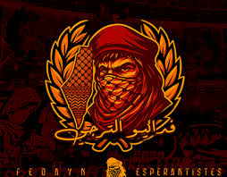

📸 صور المجموعة



العودة للرئيسيةفدائيو الترجي… ولاء حتى النهاية
تُعدّ مجموعة Fedayn Espérantiste من المجموعات الفاعلة داخل حركة الألتراس الداعمة للترجي الرياضي التونسي، وتمثل صوتًا قويًا للشباب المؤمن بالولاء المطلق والتضحية من أجل ألوان النادي.
الاسم: "Fedayn Espérantiste"، حيث تعني كلمة Fedayn "الفدائيين"،
أي أولئك الذين يضحّون بأنفسهم من أجل قضية يؤمنون بها، وهو ما يعكس الجهوزية الدائمة للتحدي
والمواجهة دفاعًا عن الترجي، بينما تشير كلمة Espérantiste إلى الانتماء
الصريح للنادي.
التأسيس: تأسست المجموعة سنة 2009، ويُشار إليها في العديد من الأغاني
باسم Fedayn Espérantiste 09.
تنشط المجموعة في المدرج الجنوبي (Virage Sud) بالملعب الأولمبي برادس، جنبًا إلى جنب مع مجموعات ألتراس أخرى مثل Matadors 2008 و Ultras L’Emkachkhines، حيث تتوحّد الجهود لخلق دعم جماهيري متواصل وقوي للفريق.
الأغاني والأهازيج: تشتهر Fedayn بإنتاج العديد من الأغاني
التي تُردّد في المدرجات، وتحمل كلمات حماسية تعبّر عن حب النادي والتضحية من أجله،
إضافة إلى رسائل اجتماعية أو سياسية في بعض الأحيان.
التيفوهات والعروض: تساهم المجموعة بشكل فعّال في إعداد
العروض البصرية (Tifos) خلال المباريات الهامة، ما يضفي طابعًا مميزًا
على مدرجات الترجي.
عقلية الألتراس: تعتمد المجموعة على مبادئ الألتراس
الأساسية، مثل الاستقلالية عن إدارة النادي، التواجد الدائم في المباريات
داخل وخارج تونس، والتنظيم والتضحية من أجل الـ Curva.
تمثل Fedayn Espérantiste جزءًا لا يتجزأ من الهوية الثقافية لجماهير الترجي، وصوتًا صادقًا للشباب الذي يؤمن بقوة الدعم اللامشروط والوفاء حتى آخر نفس.